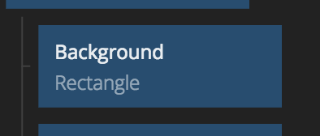
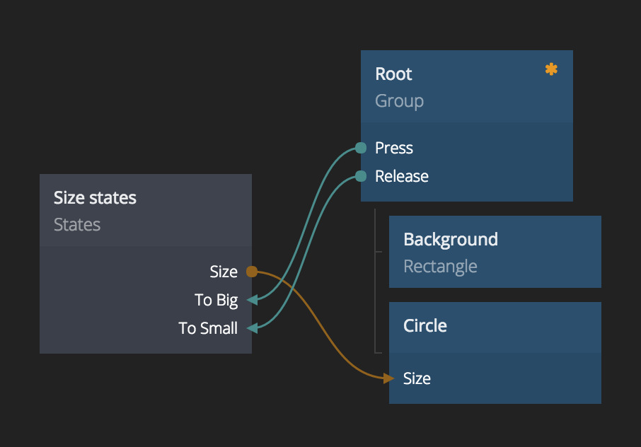

Welcome to Noodl!
Noodl is a visual codeless tool for prototyping and experimenting with new technology. In this lesson we will take you through the basic concepts, one of the greatest things about Noodl is that once you learn these concepts there will be virtually no limit to what you can create.
So bear with us, some of these concepts might feel like a big learning threshold, but hang on, you will be rewarded in the end!
The node graph
One of the core concepts of Noodl is the node graph. It sounds scary, but it is simply a collection of nodes (think of them like LEGO blocks) and connections between these nodes.
A node represents an element of your prototype, it can be a visual element like a Rectangle or something that is not immediately visible like a logical State.

When we put these nodes together with connections it becomes a node graph. With it we can make interactions for user interface protoypes, or logic for responding to voice requests. Well anything really. This is the single most important concept in Noodl. Check out the graph below, don't worry if it looks complicated now. But this is actually something we will build in this lesson.

Visuals
Almost all prototypes you will be creating have some sort of visual user interface, be it a mobile or desktop app, or simply a way for you to communicate what the prototype is doing.
For that we use visual nodes, such as images and text. These nodes are blue in color and can be arranged in a hierarchy.
What you see now in the node graph editor is a collection of visual nodes. The root node is marked with an orange star. This node and everything that is placed under it will be shown in the preview.

The preview, at the right side of the editor, shows your visual nodes live and let's you interact with it as you are editing.

A quick tip, if you find that the preview is in the way click the detach icon and you can move it out of your way.
Visual hierarchy
Let's get down to business. You can move nodes by dragging them around with the left mouse button. You can drag a node in and out of the visual hierarchy as you please.
Drag the text from the root node
Try dragging the text node away from the hierarchy. As you can see, the text disappears from the preview.

Drag the text back to make it visible
You can add a node as a child to another node by dragging it onto that node. Then it will be added as the last child. Try dragging the text node onto the root group.

The text will now be visible again in the preview.
The sidebar
All nodes have parameters that you can edit to make them behave the way you want. For instance visual nodes have parameters that affect it's appearance, position etc.
If you select a node by left clicking it you will see the parameters of the node in the sidebar to the left.

Move all nodes
You can move all nodes (panning) by pressing the right mouse button and dragging.

Delete the text node
We will not be needing the text node, so delete it. Click it to show its parameters then click the trashcan icon.

If you make a mistake when editing you can use Cmd-Z (or Ctrl-Z) to Undo your latest edit.
Change the color of the background
Edit the parameters of the background, find the color parameter and click the color square to select a nice color.

Create a circle
You can create a node by dragging it from the node panel to the right. If you want to add it as a child to another visual node, simply drop it onto that node.
Create a Circle by dragging it.

Tip. If you can find the node you want, try searching with the search bar.

Edit parameters
Center the circle
Edit the parameters of the circle and set Align X and Align Y both to center.
Change the color of the cirle
Change the color of the circle to another nice color.
Change the size of the circle
Set the size of the Circle to 300.
Interactions
Now when we have a nice centered circle it's time to make it interactive. A simple way to make your designs interactive is to use states. We want two states for the circle Big and Small.
Create a states node
Create a states node by dragging it from the node library to the right.
Change the label of the states node
Its good practice to label your nodes to make it easier to know whats going on in your prototypes. Left click your states node and give it a new label by clicking the relabel button and changing the label to Size states

The states
Create the states
First we need to create the two states that the circle can be in. Left click to show the parameters editor, under the States section click the + icon and name the state Small. Repeat for the other state, call it Big. (Note this tutorial is case sensitive)

Create the value
Rememeber back when we changed the size of the circle. Now we want the size of the circle to change depending on which state it is in. Each state can have multiple values but we only need one. Left click to show the parameters editor, under the Values section click the + icon and name the value Size.
Specify state values
Let's specify the values that we want for each state. When the circle is Small it should have a size of 100, and when it is Big it should have the size value 300. Edit the parameters as shown below:

Connect the state output to the circle
Its time to create our first connection. Connections are an essential part of Noodl, they can connect an output parameter of one node with an input parameter of another, so that when the value of the output changes it will be sent to the connection input parameter. A connection is made by hovering the border of a node and left dragging to the node that should be the target of the connection.

The connection editor should now show up, connect the Size output of the States node to the Size input of the Circle.

Interactions
Change state on touch
We need to initiate a state change on user interaction, in this case if the user touches anywhere on the screen. To do this we need to do a connection from the Root to the States node.
Connect the Press output to the To Big input.

Restore on release
When the user lifts their finger the circle should return to the Small state. Connect the Release output to the To Small input.
Test the interaction
You can now test the interaction in the preview. When pressing anywhere in the preview the circle should become bigger, when releasing again it should animate back.
Let's add a shadow circle
Let's add a drop shadow to our circle, this will be done with a new circle that is slightly blurred.
Create a new circle
Create a new circle node, drag it onto the root group node. The circle will end up at the bottom of the hierarcy.
The change it's label to Shadow circle.
Make it a shadow
Edit the parameters of the circle.
Set Size to 300.
Set Color to #000000 (black).
Set Blur Length to 30.
Set Opacity to 0.5.
Center the circle on the screen like the previous one with Align X and Align Y.
Move it behind the other circle
As you can see the shadow circle is in front of our other circle. To move it behind simply drag and drop it above the original circle in the visual hierarcy.

Connect the state size
Right now the state change only affects the size of the first circle, to make it change the size of the shadow as well the shadow's size must also be connected to the states size output. Like you did before connect the Size port from the States node to the Size port of the Shadow Circle.

Lesson completed!
Congratulations you have completed the getting started lesson! Try the interaction again in the preview and see that both the shadow and circle moves on the interactions.
You have learned the most important concepts of Noodl, nodes and connections. This is the basis for all future stuff you will learn, so give yourself a good pat on the back!
You can exit the editor and go back to the project view by clicking the Noodl logo. How about a second lesson now that you got the basics?